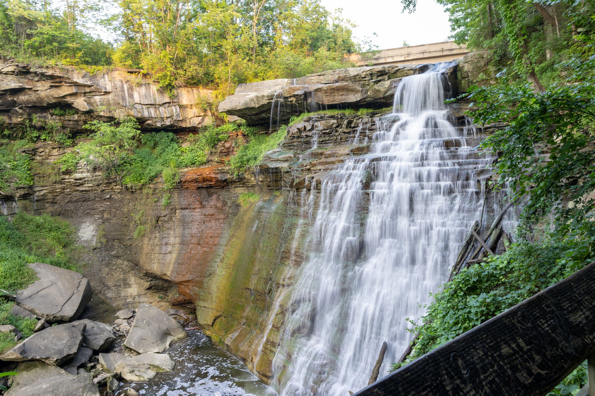
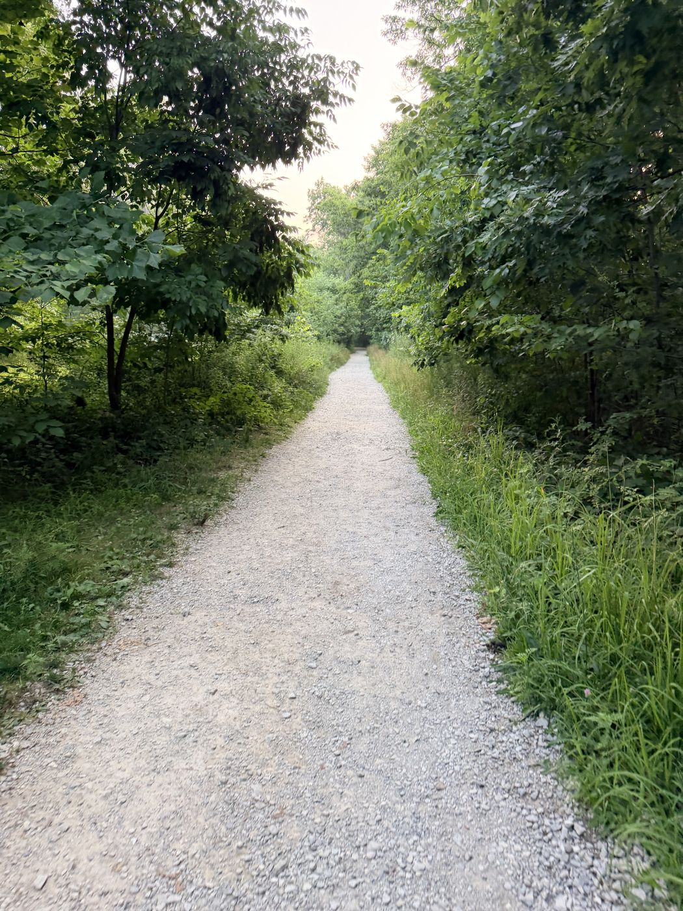
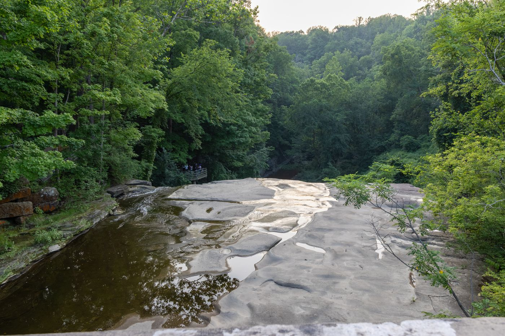
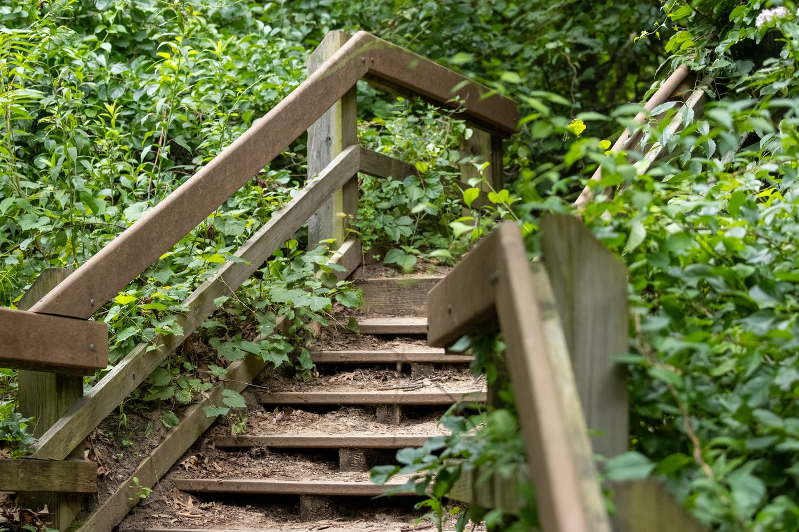
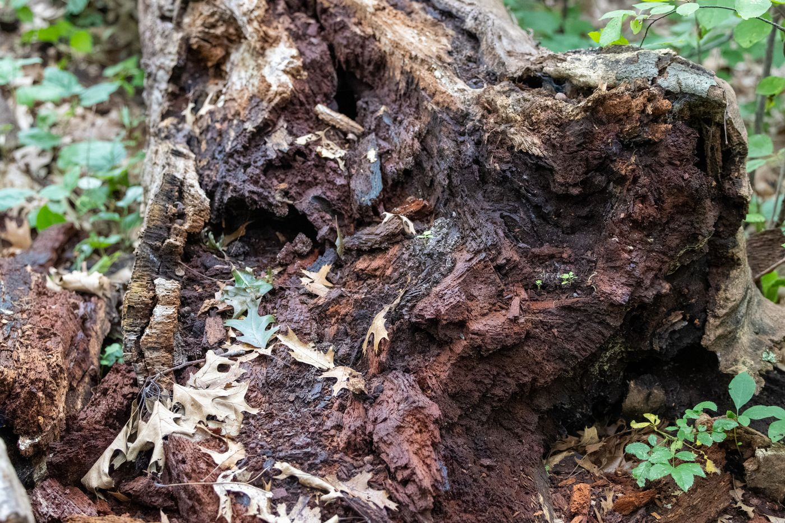
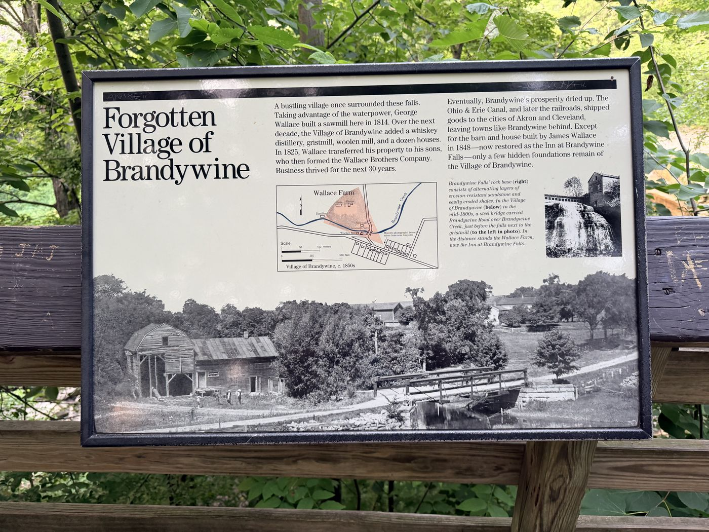
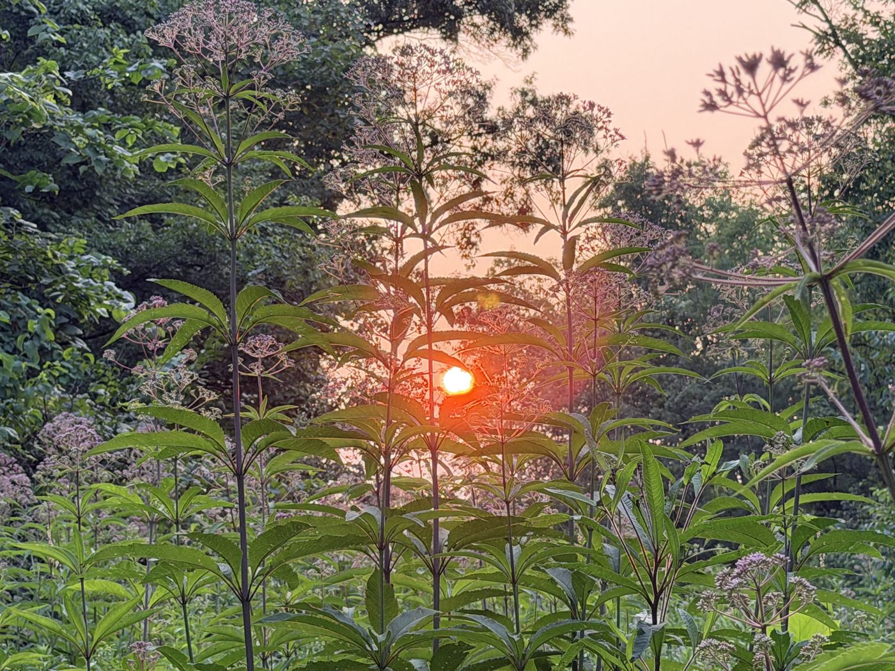
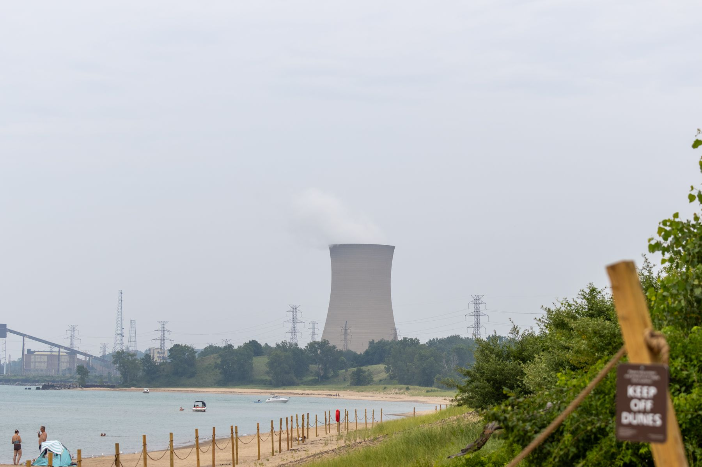
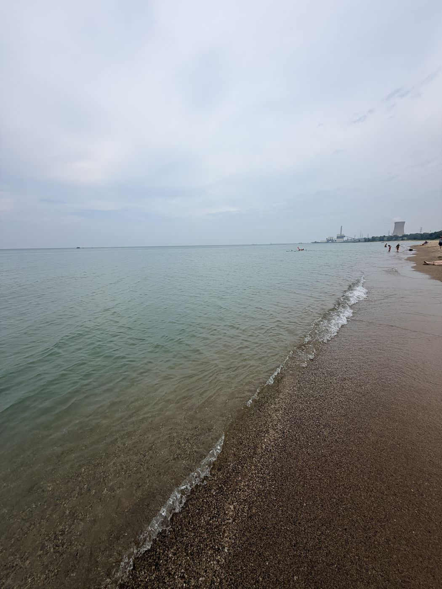
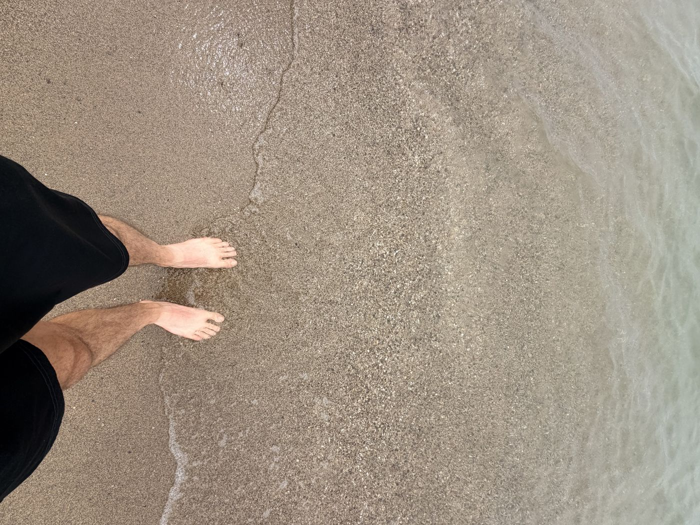

Cuyahoga Valley National Park
On my roadtrip to Chicago, I stopped at Cuyahoga Falls national park in Ohio. I had my nice camera with me and was walking around taking pictures and on the way back this indian guy and his dad stopped me and asked if I knew where the best place to take a picture was. i guess thats just what u do when u see a handsome guy with a camera. i pointed them to the spot then said bye and left.
Brandywine Falls







Indiana Dunes National Park
The next day, 300 miles away, I’m getting out of my car at Indiana Dunes national park.
LO AND MOTHER FUCKING BEHOLD MY BOYS ARE GETTING OUT OF THEIR CAR LOL
I’m like YOOOOOO guys remember me from yesterday???? They were like ohhhhhhh shittttttttt lol it was a guy and his father in law they were doing kind of the same big loop, also ending up in Chicago like I was.
We exchanged info, took a pic, hugged and said see ya later but what a wild coincidence and just one of those sparks in life where you go YEP that was one of the good moments.
Here’s a couple shots from Cuyahoga Falls and the first stop at Indiana Dunes.



Lake Michigan from the dunes · tap for sound